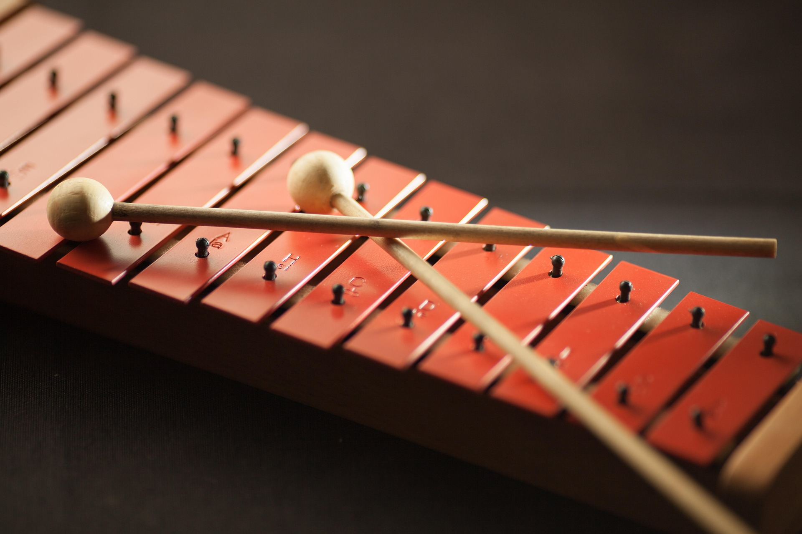
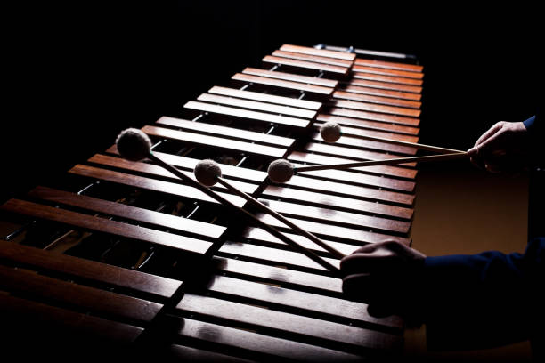

Xylophone
Xylophones are classified as definite-pitch idiophones. They make sound by being hit with a mallet (or mallets) on a key where a defined pitch sound then vibrates off the body of the specific key. Xylophones covers around 4 octaves of notes, meaning a full xylophone has 48 distinct keys.

Classical Applications
The xylophone acts as a percussion instrument with a fully defined range of notes. This allows it to act as a common counter melody to the main melody, if it is not playing the main melody itself. This means xylophones act as a centerpiece of percussion focused pieces.

Famous Piece
Percussion instruments, in general, are notable for being featured as ringtones. Their sharp tone and nature lends well to the nature of the task, audibly informing the user of something. This is a relatively well known Apple ringtone featuring the xylophone.
Fun Fact!
People often get marimbas and xylophones mixed up as they are both key based percussion. The difference is the pitch focus of each instrument. Marimbas has a much lower range compared to the xylophone which covers a much higher range. They are simply tonally different.